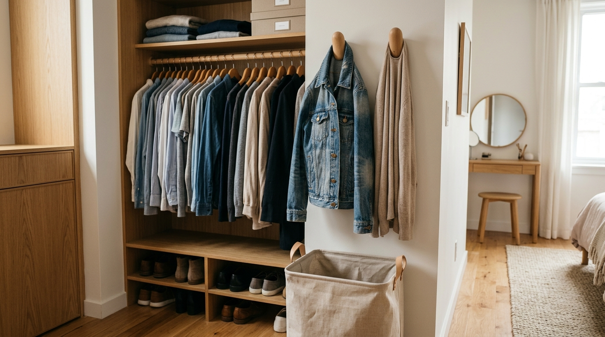

You wore a knit sweater for two hours during a morning video call. It isn't dirty, and washing it would cause unnecessary wear to the delicate yarn.
Yet, you hesitate to hang it right back alongside your freshly laundered shirts. So, without thinking, you drape it over the back of the bedroom accent chair. That evening, a pair of jeans joins the sweater. By Wednesday, a cardigan and a lightweight jacket land on top of the pile. Before the week is over, the chair is no longer a chair—it is an unofficial, messy storage mountain for everything that is “not quite clean and not quite dirty.”
If this sounds familiar, understand one crucial reality: The clothes chair is not a personal failure or a lack of discipline. It is a missing category problem.
Most traditional bedrooms only provide two physical destinations for clothing: the closet (for 100% clean clothes) and the hamper (for dirty laundry). When garments fall into the ambiguous gray area in between, they naturally collect on convenient flat surfaces. By introducing a deliberate third category—The Rewear Zone—you give lightly worn clothes a defined, controlled home that protects your wardrobe and keeps your bedroom permanently calm.
Why the “Clothes Chair” Happens in Every Home
In almost every household, the clothes-chair phenomenon happens for predictable functional reasons:
- Clean Clothes Have a Defined Home: Hangers, drawers, and wardrobe shelves are reserved for freshly laundered garments.
- Dirty Clothes Have a Defined Home: The laundry hamper catches clothing that needs immediate washing.
- Worn-Once Clothes Have No Official Home: Because there is no dedicated station for in-between garments, flat horizontal surfaces (chairs, benches, dressers, bed edges) become default landing pads.
- Convenience Overrides Intent: When changing clothes at the end of a long day, the path of least resistance wins. Draping a sweater over a chair takes one second; making a complicated sorting decision takes effort.
Recognizing that this is an architectural gap rather than laziness allows you to build a system that works with human behavior. To see how clothing habits interact with closet layout, explore our guide on how to audit your closet based on what you actually wear.
The Three-Category Closet System
To eliminate bedroom clutter permanently, upgrade your daily clothing sorting from a 2-stage system to a 3-category framework:

| Category | Physical Destination | Typical Garments | Core Purpose |
|---|---|---|---|
| 1. CLEAN | Main Wardrobe / Drawers | Freshly washed shirts, underwear, dresses | Long-term organized storage. |
| 2. WORN ONCE | Dedicated Rewear Zone | Sweaters, jeans, cardigans, light jackets | Controlled, temporary staging between wears. |
| 3. DIRTY | Laundry Hamper | Workout gear, base layers, soiled items | Direct pipeline to washing. |
"The purpose of a rewear zone is not to wear clothes indefinitely. It is to prevent an undefined temporary category from taking over your room."
What Is a Rewear Zone?
A Rewear Zone is a deliberately limited, visually distinct staging area for garments that have been worn briefly but remain suitable for future wear before laundering.
Unlike a chair or bed corner, a true rewear zone possesses three mandatory characteristics:
- Strict Capacity Limits: It holds a maximum of 2 to 4 garments at any given time.
- Visual Separation: It keeps intermediate clothes physically distinct from pristine wardrobe rows so you always know what is clean.
- Airflow & Accessibility: Garments hang loosely to air out naturally between uses rather than being compressed into a wrinkled heap.
Crucially, you do not need to buy expensive furniture to create one. A rewear zone can be formed with simple wooden wall pegs, a dedicated end of a closet rod, or a small valet hook. For rental-friendly installation ideas, see our guide on how to organize a rental closet without drilling.
How to Create a Rewear Zone (Step-by-Step)
Follow these five steps to set up a functional rewear zone in under ten minutes:
- Step 1: Choose One Specific Location: Select a single spot near where you undress—such as the inside panel of your closet door, the side of your wardrobe, or a small wall section next to your dresser.
- Step 2: Establish a Hard Boundary: Install 2 to 3 wall pegs, place 3 distinct wooden hangers on a separate rod bracket, or designate one shallow open basket.
- Step 3: Keep It Small: Never allocate space for more than 4 items. Artificial scarcity forces ongoing decisions.
- Step 4: Separate Clean from Rewear: If using a closet rod, use a physical divider or distinct colored hanger to prevent worn items from blending into clean shirts.
- Step 5: Practice the "One In, One Out" Habit: When your rewear zone reaches capacity, make a decision on an existing item before adding another.
The “Rewear → Return → Wash” Decision Framework
Whenever you take off an item of clothing at the end of the day, run it through this quick 3-way decision filter:
REWEAR → RETURN → WASH
- REWEAR: You plan to wear this piece again in the next 2 to 3 days (e.g., denim jeans, everyday cardigan). Place it directly into your rewear zone.
- RETURN: The item was worn for 30 minutes indoors, has zero odors or wrinkles, and will not be worn again this week. Hang or fold it and return it to normal closet storage.
- WASH: The garment touched bare skin all day, absorbed perspiration, or has visible marks. Place it directly into the laundry hamper.
Note: Always consult individual garment-care labels and fabric guidelines. This is an organizational decision framework, not a rigid laundering standard.
How to Stop the Rewear Zone From Becoming Another Clutter Pile
A rewear station only succeeds if it remains strictly controlled. Follow these guardrails to prevent it from devolving into a "chair 2.0":
- Enforce the Capacity Rule: If your 3 hooks are full, you cannot add a fourth garment. You must either rewear one, return one to the closet, or put one in the wash.
- Keep the Horizon Visible: Never pile clothes horizontally on top of each other. Each garment in the rewear zone must hang independently.
- Perform a Weekly Sunday Reset: Once a week, clear the rewear zone completely. Anything that was not reworn during the week either gets laundered or returned to storage.
To avoid common closet layout traps that cause overflow, review our breakdown of 5 closet mistakes making your space feel smaller.
Where Should Your Rewear Zone Go?
Choose an orientation that fits your bedroom layout and aesthetic preference:
4 Practical Rewear Zone Locations
1. Inside the Closet Door: Mount 2 over-the-door or adhesive hooks on the inside panel of your wardrobe. Keeps worn clothes completely invisible when closet doors are closed.
2. The Wardrobe Side Wall: Use the exterior side panel of a freestanding wardrobe for 2 minimalist wooden peg hooks. Takes advantage of dead vertical wall space without drilling into apartment drywall.
3. The "Last 3 Hangers" Method: Reserve the far right 6 inches of your closet rod for 3 distinct hangers separated by a wooden divider or ring.
4. A Slim Valet Stand or Ladder: A narrow leaning wooden ladder in the bedroom corner provides horizontal rungs for jeans and sweaters while looking like an intentional design choice.
What Belongs in a Rewear Zone (And What Doesn't)
Maintaining strict category boundaries ensures your system stays sanitary and organized:
| Appropriate for Rewear Zone | Does NOT Belong in Rewear Zone |
|---|---|
| ✓ Heavy denim jeans & trousers | ✗ Base layers, underwear & socks (Hamper) |
| ✓ Wool sweaters & knit cardigans | ✗ Gym & activewear (Hamper) |
| ✓ Light outerwear & casual blazers | ✗ Clean folded clothes waiting to be put away (Closet) |
| ✓ Loungewear worn for evening relaxing | ✗ Damaged clothes needing repairs (Separate sewing bin) |
A 5-Minute “Clothes Chair” Reset
If your bedroom chair is currently covered in a pile of mystery garments, clear it right now in five quick steps:
- Strip the Chair: Move the entire pile onto your bed so you can see every individual piece.
- Create 3 Quick Piles: Sort rapidly into Clean, Rewear, and Laundry.
- Process the Laundry: Drop the dirty pile directly into the hamper.
- Select Your Top 3 Rewear Pieces: Pick a maximum of 3 items you will actually wear in the next 48 hours and hang them in your new Rewear Zone.
- Put Away the Rest: Hang or fold remaining clean items back into their primary closet drawers.
Your chair is now clear. Sit on it, enjoy the breathing room, and let the new 3-category rule protect your bedroom moving forward.
Who Benefits Most From This System?
The Rewear Zone is especially transformative for:
- Apartment Renters: Compact bedrooms cannot afford to lose usable floor space to chair clutter.
- Delicate Wardrobe Owners: Extending the life of woolens and raw denim by avoiding over-washing.
- Busy Morning Routines: Having 2–3 pre-aired, ready-to-wear casual layers staged makes getting dressed fast and effortless.
For more foundational wardrobe and storage guidance, browse our full collection of closet organization ideas.
Frequently Asked Questions
If a garment has noticeable body odor or sweat, it belongs in the laundry hamper, not the rewear zone. Only odor-free, lightly worn pieces should enter the rewear zone, where open air circulation keeps them fresh.
We recommend a maximum lifespan of 5 to 7 days. If you haven't chosen to rewear the item within a week, it is either time to wash it or return it to your primary wardrobe.
Yes, provided the basket is shallow and open. A small wire or woven basket on a dresser top works well for folded cardigans and loungewear, provided you do not let items stack more than two layers deep.
Are you 18-24 or a Student? Get 6 Months of Prime for $0!
Limited Time Offer (Ends Oct 9): Enjoy fast, free shipping, unlimited streaming, $0 food delivery (Grubhub+), fuel savings (10¢/gal), Prime Reading, unlimited Amazon Photos storage, and exclusive grocery deals. Claim your 6-month free trial of Prime for Young Adults today.
Try Prime for Free →